Sustainable Cellulose Foams
Fourth Year Capstone Group Design Project - UCL Mechanical Engineering
Overview
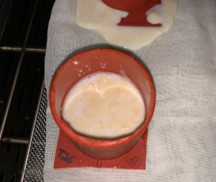- Designing and implementing a novel foam production method in order to manufacture and test: a sustainable, industry-rivalling cellulose foam for use as insulation panels in the construction industry.
- Foam materials were constrained to sustainable cellulose fibres and non-toxic substances as to meet the project aim. Additionally, the foam had to be classified as flame-resistant for its use in construction.
- Main objectives for the foam were derived from industry standards, including:
- High thermal insulation with thermal conductivity of less than 100mw/mK, and porosity greater than 70%
- Classifying as flame-resistant by exhibiting a limited oxygen index (LOI) greater than 21%
- Sufficient structural rigidity within walls, exhibiting a compressive modulus of atleast 0.2MPa
- Resistance against humidity, with a water absorption rate of less than 14.6%
- An environmentally friendly and scalable manufacturing process feasible for industrial-level panel production
- A year-long group project delivering the final manufactured foam, dissertation and multiple presentations
My contributions
- I initially surveyed the equipment and chemicals already present within the UCL labs, in order to create and maintain an inventory system (right →) detailing available equipment and what needed to be ordered throughout the project within our £12,000 budget.
- In order to efficiently divide the project's substantial literature bank (55+ research papers) amongst group members, I also developed a matrix with actionable take-away sections for each paper, such as foam ingredients, manufacturing steps, results, insights etc.
- Given the findings from literature, methods were iteratively developed for the extraction of cellulosic macrofibres from plants, and also the creation of foams from these fibres. Focus was put on the simplicity, footprint and cost of our manufacturing methods.
- Macrofibre extraction was refined to four steps; cutting the plant into strips and softening, separating fibres using a razor, refinement in basic solution, and finally washing. This process was carried out on sisal and bamboo plant (as seen below).
- The foaming process also contained 4 steps: immersion in water & additive mixture, stirring stage to introduce bubbles, curing stage of heating in the furnace and lastly coating: observed below.
- Many ingredients were introduced to the foams in order to meet the objectives, such as tween 80 as surfactant, castor oil as cross-linking agent, furfuryl alcohol as stabiliser, boric acid as flame retardant, and more.
- Additionally to this, a novel twist was being employed on the foaming process whereby our extracted macrofibres were mixed in specific ratios with a selection of cellulosic fibrils for further favourable properties.
- Varying the concentration of any constituent was seen to substantially impact the final properties of the foams. Thus, a trialling methodology was employed to create and test varying composition foams to optimise toward project objectives. Three parameters were altered individually in different 'series' of trials: macrofibre to fibril ratio; fibril type and castor oil percentage by mass.
- In the testing of the trials, I led the mechanical compression testing using Instron 5985 Universal Testing machine with a 500N load cell and external strain gauge. A routine was created on the Instron to compress the foams to 10%, 20%, 30% and then 70% strain.
- Loading and unloading moduli, plateau strains and stresses, densification regions and strain energy densities of the trials were to be determined from the Instron raw data output. Given the 120+ trials, I wrote a python program to analyse the raw data, implementing numerical methods to filter out the unloading regions and determine the plateau and densification points.
- Analysis quantitatively demonstrated that: the insight fibril type yielded the best mechanical properties; the microfibre to fibril ratio had no substantial impact; and 10-15% castor oil concentration foams performed up to 15x better mechanically than others.
- Further evaluation of trials involved: C-Therm MTPS sensor thermal conductivity measurements; CT scanning for porosity; Stanton Redcroft FTA module for flammability testing; water bath humidity testing; and full life cycle analysis for carbon emissions.
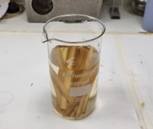
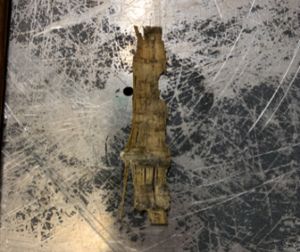
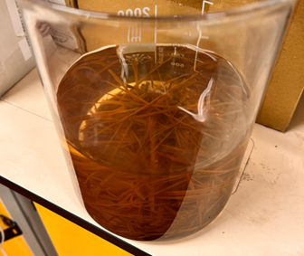
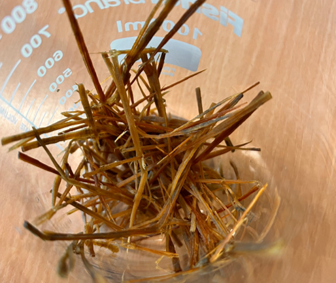
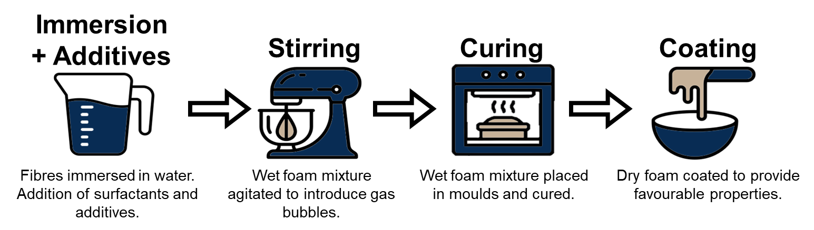
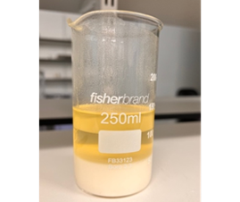
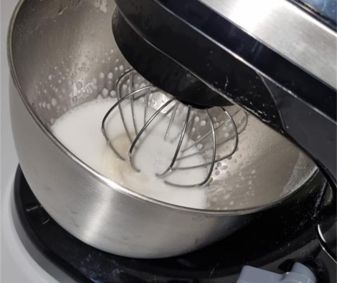

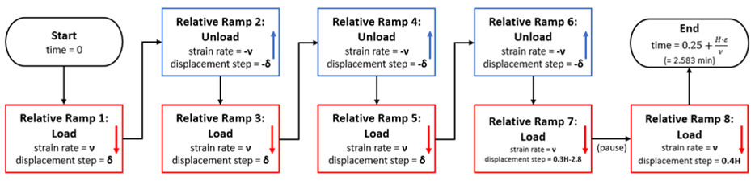
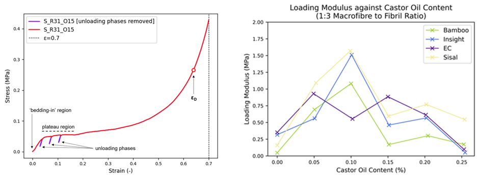
Results
- The final foam was selected from a trial comprising: sisal macrofibres; a 1:1 macrofibre to fibre ratio; and 2.5% castor oil content.
- A large 1m x 1m panel (right) was manufactured to demonstrate the scalability of the developed manufacturing methods.
- The final foam was found to be superior compared to current industry standard foams with:
- Higher flame retardance at 24% Limited Oxygen Index compared to 21%
- Lower CO2 Emissions at 3.17 kg equivalent compared to 6.47 kg equivalent
- Higher compressive loading modulus of 1.22MPa compared to 0.02MPa - Yet, having some room for improvement compared to industry standards, exhibiting:
- Higher thermal conductivity of 67 MW/MK compared to 50 MW/MK (Lower is better)
- Lower porosity of 85.7% compared to 95%
- Higher water absorption of 13.31% compared to 7.1% (Lower is better) - Hence, the final product is a argued a competitive and flame-resistant, sustainable alternative to current industry standard foams.
- The final presentation was very well received, with the scaled-up foam impressing the panel, along with the sustainability of the methods and materials employed whilst also achieving the final foam's competitive properties. The project received a first class.
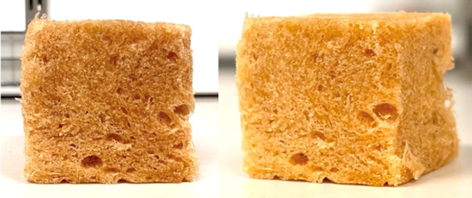
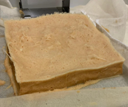
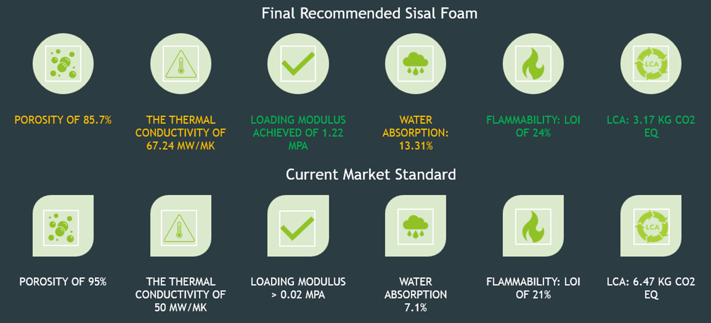